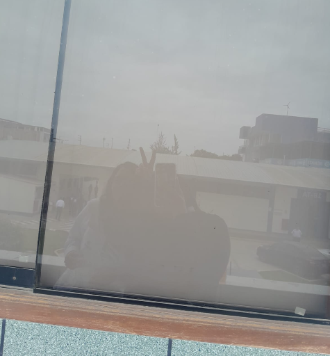
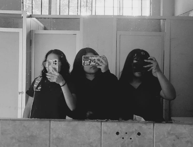
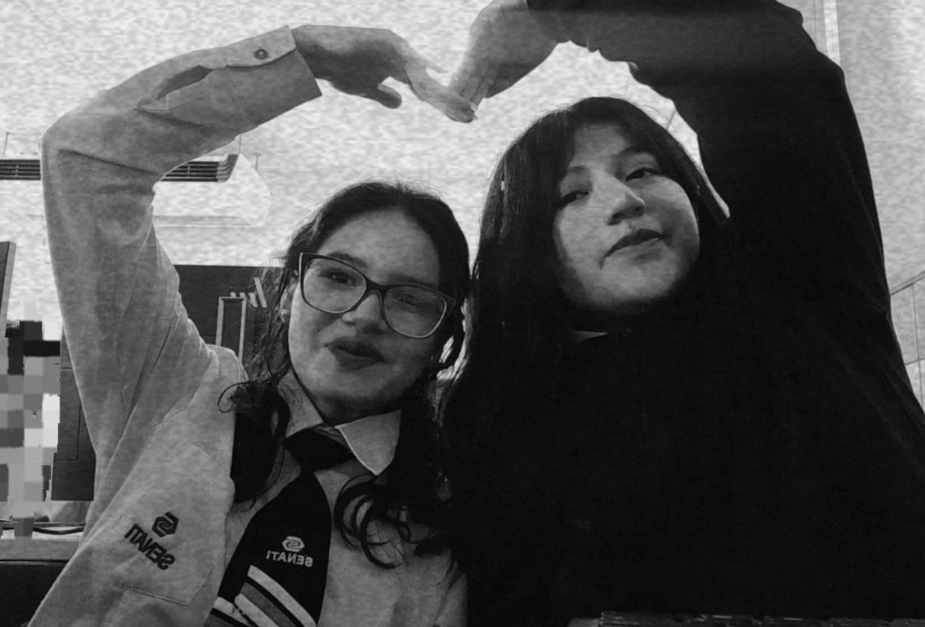
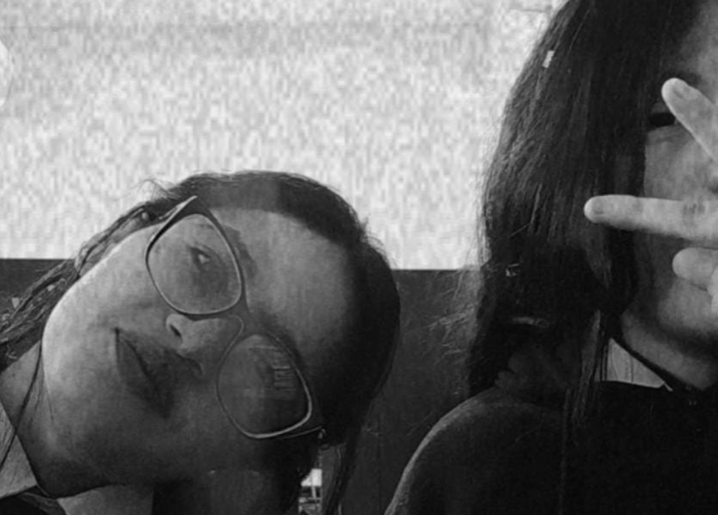
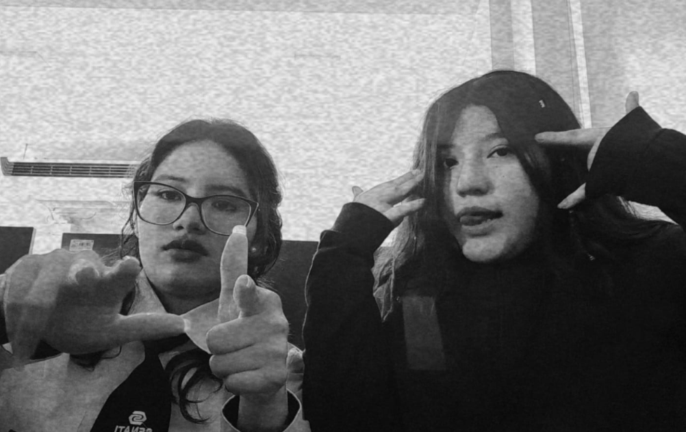
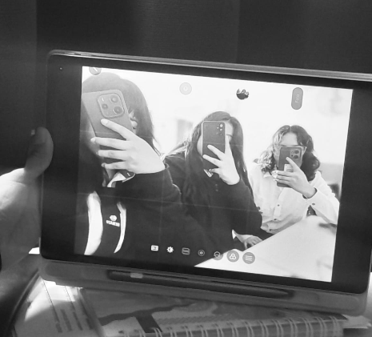

Una nueva etapa, nuevos sueños, nuevas experiencias y muchísimas historias que todavía están por escribirse.
PARA UNA PERSONITA ESPECIAL
Holaaaa, cumpleañera. Antes que nada, quiero desearte un cumpleaños demasiado bonito. Espero que hoy recibas muchísimo cariño, que sonrías un montón y que disfrutes cada segundo de este día.
Hoy cumples 18 años y no quería dejar pasar esta fecha sin hacerte algo especial. Quizás no sea un regalo enorme ni algo que puedas guardar en una cajita, pero es algo que hice pensando en ti, con mucho cariño y con ganas de que tengas un recuerdo bonito de este día.
Quería regalarte algo que pudieras volver a abrir dentro de unos años y que, al leerlo, te recuerde esta etapa, las personas que conociste y todos esos pequeños momentos que hicieron que tu vida fuera un poquito más bonita.
Porque aunque no nos conozcamos desde pequeñas, aunque nuestra amistad no tenga muchísimos años, me alegra mucho que nuestros caminos se hayan cruzado. En poco tiempo te convertiste en alguien importante para mí y eso es algo que realmente valoro.
DESDE EL PRIMER CICLO HASTA HOY
Una amistad que comenzó con timidez y terminó convirtiéndose en algo muy bonito.
Si nos ponemos a recordar cómo comenzó todo, creo que es bonito pensar en nuestro primer ciclo. Cuando todavía no teníamos tanta confianza y ambas éramos un poquito tímidas.
Quizás en ese momento no hablábamos tanto como ahora, o todavía no nos conocíamos lo suficiente para saber todas las cosas que teníamos en común. Éramos simplemente dos compañeras que poco a poco iban compartiendo el mismo espacio.
Pero llegó el segundo ciclo y siento que ahí las cosas comenzaron a cambiar. Empezamos a convivir mucho más tiempo, a compartir más momentos y a tener más oportunidades para conocernos.
Lo que antes quizás eran pequeñas conversaciones se fue convirtiendo en más confianza, más risas y más momentos juntas.
Y creo que fue ahí cuando comenzamos a acercarnos de una manera diferente.
Algo que me gusta mucho de nuestra amistad es que siento que hicimos click desde que empezamos a agarrar más confianza. No sé cómo explicarlo exactamente, pero simplemente fue bonito comenzar a sentir que podía compartir más cosas contigo.
Es lindo cuando una persona deja de ser solamente una compañera y poco a poco se convierte en alguien con quien quieres compartir tus días.
Y ahora, cuando miro cómo hemos ido acercándonos, me doy cuenta de que hay amistades que no necesitan años para empezar a significar mucho.
Porque lo importante no siempre es cuánto tiempo llevas con alguien, sino lo que esa persona llega a significar para ti durante el tiempo que comparten. Y tú te has convertido en alguien que me alegra tener en mi vida.
UNA DE NUESTRAS COINCIDENCIAS
Y cómo no mencionar una de las cosas que también compartimos: nuestros gustos. Porque qué bonito es encontrar a alguien con quien puedes hablar de cosas que te gustan y saber que la otra persona entiende esa emoción.
Entre esas coincidencias está BTS. Porque siempre es bonito compartir gustos, hablar de canciones, recordar momentos, emocionarnos por las mismas cosas y tener esos pequeños temas que solamente nosotras entendemos de la misma manera.
Me gusta que tengamos esas coincidencias, porque son pequeñas partes de nuestra amistad que la hacen todavía más divertida. Y quién diría que entre clases, ciclos, conversaciones y tantas cosas terminaríamos compartiendo también gustos como ese.
Ojalá todavía nos queden muchísimas conversaciones sobre BTS, canciones que escuchar, momentos que comentar y muchas otras cosas que seguramente iremos descubriendo que tenemos en común.
NUESTRO PEQUEÑO ÁLBUM
Seis fotografías, seis pequeños espacios para guardar un poquito de esta amistad. Porque espero que todavía nos queden muchísimos más recuerdos por crear.

Qué bonito fue coincidir contigo entre tantas personas.

De esas pequeñas cosas que terminan convirtiéndose en recuerdos.

Una amistad que fue creciendo poquito a poquito.

Me alegra que seas parte de esta etapa de mi vida.

Por todas las risas y momentos que todavía nos esperan.

Y que esta sea solamente una pequeña parte de nuestra historia.
"No importa si no nos conocemos desde pequeñas, lo bonito es que en el tiempo que llevamos compartiendo hemos logrado construir algo que vale la pena cuidar."
CON MUCHO CARIÑO PARA TI
Aunque sabemos que eres Zarai con Z e i... hoy también hay un pequeño espacio para nuestra querida Saray. JAJAJA.
Holaaaa, mi querida Zarai. O mejor dicho... Saray. JAJAJA. ♡
Primero que nada, ¡felices 18 años! Espero que hoy tengas un día demasiado bonito, que recibas mucho cariño, que te consientan, que sonrías muchísimo y que disfrutes cada momento de tu cumpleaños.
Quería hacerte algo diferente para esta fecha, algo que no fuera solamente un mensaje de cumpleaños que lees y después queda perdido entre tantas conversaciones. Quería hacerte una pequeña página con palabras que puedas guardar y volver a leer cuando quieras.
Y mientras pensaba en qué escribirte, comencé a recordar cómo empezó nuestra amistad. Es curioso pensar que desde el primer ciclo ya nos conocíamos, pero ambas éramos tímidas y todavía no teníamos esa confianza que tenemos ahora.
Creo que ninguna de las dos imaginaba que al pasar al segundo ciclo las cosas cambiarían tanto. Comenzamos a convivir más tiempo, a compartir más momentos y a conocernos de una manera diferente. Poco a poco dejamos de ser solamente compañeras para convertirnos en amigas.
Y sinceramente, me alegra muchísimo que haya sucedido así. Me gusta recordar cómo fuimos agarrando confianza, cómo empezamos a compartir más cosas y cómo se fue formando esa amistad que hoy tengo la suerte de disfrutar.
Algo que también me parece bonito es que tengamos gustos en común. Como BTS, por ejemplo. JAJAJA. Es lindo encontrar a alguien con quien puedes compartir esas pequeñas cosas que te emocionan, hablar de lo que te gusta y saber que hay una parte de ustedes que coincide.
Y aunque quizás parezcan detalles pequeños, para mí son esas cosas las que hacen que una amistad tenga su propia esencia. Cada conversación, cada risa, cada gusto compartido y cada momento van formando recuerdos que poco a poco se vuelven especiales.
Quiero que sepas que, aunque no nos conozcamos desde pequeñas y no tengamos una historia de muchísimos años, eso no hace que nuestra amistad sea menos importante. A veces el tiempo no determina cuánto puede llegar a significar una persona.
Porque hay personas que conocemos hace años y otras que llegan hace relativamente poco, pero que de alguna manera consiguen hacerse un espacio en nuestra vida. Y tú eres una de esas personas para mí.
En el tiempo que llevamos conociéndonos te has convertido en alguien importante, alguien con quien me gusta compartir mis días y de quien me alegra poder decir que es mi amiga.
Gracias por permitirme conocerte, por cada momento compartido, por las conversaciones, las risas y por todas esas pequeñas cosas que quizás no parecen tan grandes, pero que terminan haciendo especial nuestra amistad.
Ahora quiero hablarte de tus 18 años. ¡Qué emoción! Una nueva etapa comienza y espero que sea una de las más bonitas de tu vida.
Sé que cumplir 18 puede sentirse como entrar a un mundo diferente. De pronto parece que vienen muchas responsabilidades, decisiones y cosas nuevas. Pero quiero recordarte que no tienes que tener toda tu vida planeada por cumplir esta edad.
No necesitas saber exactamente qué quieres, ni tener todo conseguido, ni compararte con las personas que parecen tener su camino resuelto. Todavía tienes muchísimo por descubrir. Date tiempo para crecer, equivocarte, aprender y volver a intentarlo.
Deseo que esta nueva etapa te traiga oportunidades preciosas, que puedas cumplir tus metas, conocer lugares nuevos, vivir experiencias que nunca olvides y descubrir muchas cosas que todavía no sabes que te gustan.
Quiero que sigas siendo tú. Que nunca pierdas esa esencia que te caracteriza, que sigas teniendo tus gustos, tus ocurrencias, tus sueños y esa forma de ser que te hace única. No cambies solamente por intentar encajar en lugares donde no tienes que demostrar nada.
También deseo que siempre tengas cerca personas que te quieran de verdad, que te respeten, que te escuchen y que estén felices de verte crecer. Personas con las que puedas ser tú misma y con quienes no tengas que fingir nada.
Espero que tengas días maravillosos, pero también mucha fortaleza para esos días en los que las cosas no salgan como esperabas. Que nunca te falten motivos para continuar y que siempre puedas recordar lo mucho que vales.
Y hablando de nosotras, quiero que sepas que realmente deseo que nuestra amistad dure. No quisiera que todo esto se quede solamente en una etapa del instituto o en recuerdos de los ciclos que compartimos.
Me gustaría que sigamos conociéndonos, que todavía tengamos muchas cosas por contarnos, que compartamos más gustos, más bromas, más fotografías y muchas más experiencias. Que incluso cuando pasen los ciclos, los años o nuestras vidas tomen caminos diferentes, podamos seguir conservando ese cariño y esa confianza.
Quiero que algún día podamos recordar cómo éramos en el primer ciclo, lo tímidas que nos mostrábamos, cómo cambió todo cuando comenzamos a compartir más tiempo en el segundo y cómo terminamos convirtiéndonos en amigas.
Y quién sabe, quizás dentro de unos años tengamos muchísimas más fotografías, anécdotas que ahora ni imaginamos y tantas historias que contar. Espero que cuando llegue ese momento podamos reírnos recordando todo esto.
También quiero que recuerdes que no necesitas hacer algo extraordinario para ser importante para alguien. A veces simplemente ser tú, compartir un momento o estar presente es suficiente para dejar un recuerdo bonito.
Gracias por haber coincidido conmigo, por ese click que tuvimos cuando comenzamos a tener más confianza y por formar parte de esta etapa de mi vida.
Este pequeño regalo está hecho con mucho cariño. Quería que tuvieras algo que no solamente celebrara tu cumpleaños, sino que también guardara un poquito de nuestra historia.
Disfruta muchísimo tus 18, Zarai. Permítete vivir, aprender, soñar, equivocarte, crecer y ser feliz. Que nunca te falten razones para sonreír ni personas que te hagan sentir querida.
Y recuerda que, aunque ahora te escriba Zarai en esta carta, siempre habrá un pequeño espacio para nuestra Saray. JAJAJA, porque ese nombre ya es parte de nuestras bromas y no pienso dejarlo ir.
Te deseo una vida llena de momentos bonitos, sueños cumplidos y personas que hagan que valga la pena cada etapa.
UNA NUEVA HISTORIA COMIENZA
Dieciocho años de vida, de aprendizajes, de momentos que te hicieron sonreír, de experiencias que te enseñaron y de personas que fueron formando parte de tu historia.
Ahora tienes delante una página en blanco, llena de posibilidades y cosas que todavía no conoces. No tengas miedo de escribir tu propia historia a tu manera.
Que no te apresures por crecer, que no te compares con nadie y que disfrutes cada parte del camino.
Ojalá este capítulo esté lleno de aventuras, nuevas oportunidades, sueños que se cumplen, amistades sinceras y momentos que algún día quieras volver a vivir.
Y que, cuando llegue el momento de comenzar un nuevo capítulo, puedas mirar atrás y sentirte orgullosa de todo lo que has vivido.
PARA ESTA NUEVA ETAPA
Porque mereces que la vida te sorprenda con muchísimas cosas maravillosas.
Que nunca te falten motivos para sonreír, que disfrutes las pequeñas cosas y que tengas muchísimos días que quieras recordar.
Que tengas el valor de perseguir lo que deseas y que cada esfuerzo te acerque un poquito más a la vida que quieres construir.
Que encuentres personas que te valoren, que celebren tus logros y que quieran compartir contigo tanto los días buenos como los complicados.
Que tengas paz en tu corazón, que aprendas a darte tiempo y que nunca olvides que también mereces descansar.
Que conozcas lugares nuevos, vivas experiencias inolvidables y tengas historias preciosas que contar algún día.
Que nunca dudes de tu valor, que te sientas orgullosa de ti y que siempre recuerdes lo especial que eres.
ALGO QUE ESPERO DE CORAZÓN
Sé que no nos conocemos desde pequeñas, que no tenemos fotografías de cuando éramos niñas ni recuerdos de una infancia compartida. Nuestra historia comenzó mucho después, en un instituto, durante un ciclo en el que quizás ninguna imaginaba lo que vendría.
Pero creo que eso también tiene algo bonito. No todas las amistades necesitan comenzar desde la infancia para convertirse en algo importante.
A veces basta con coincidir en el momento indicado, compartir tiempo, tener confianza y permitir que una amistad crezca de manera natural.
Y eso es lo que espero que siga pasando con nosotras. Que no importa cuántos ciclos pasen, cuántas cosas cambien o cuántas nuevas etapas lleguen, podamos seguir encontrando motivos para compartir momentos.
No espero que todos los días sean iguales, porque sé que cada una tendrá sus propias responsabilidades, sueños y caminos. Pero sí espero que nunca perdamos ese cariño que hemos ido construyendo.
Quiero que todavía tengamos muchas fotografías que agregar a este pequeño álbum, muchas conversaciones que recordar y muchas bromas que solamente nosotras entenderemos.
Y sobre todo, quiero que sepas que me alegra haberte encontrado. Gracias por ser parte de mi historia, así como espero que yo también pueda formar parte de algunos de tus recuerdos bonitos.
PARA CUANDO VUELVAS A LEER ESTO
Zarai, si algún día encuentras nuevamente esta página, quiero que leas esto.
Hola, Zarai del futuro. ♡
No sé cuántos años tendrás cuando vuelvas a abrir esta página. Quizás 20, 22, 25 o incluso muchos más.
Quizás ahora tengas nuevos sueños, hayas conocido muchísimas personas, hayas vivido experiencias que hoy ni siquiera imaginas y tu vida sea completamente diferente.
Pero espero que, al leer estas palabras, puedas recordar con cariño aquella etapa en la que estabas cumpliendo 18 años.
Recuerda cómo comenzó todo desde el primer ciclo, cuando todavía éramos tímidas, cómo las cosas cambiaron al pasar al segundo y cómo poco a poco fuimos construyendo una amistad.
Recuerda nuestras conversaciones, nuestros gustos compartidos, las bromas, las risas y hasta nuestro querido nombre de Saray. JAJAJA, espero que todavía te dé risa.
Quizás con los años olvidemos algunos detalles de este día, pero espero que nunca olvides lo bonito que fue comenzar esta amistad.
Esta página fue hecha por Helen, una amiga que quiso dedicarte un pedacito de su tiempo para celebrar tus 18 años y recordarte lo importante que te volviste en su vida en tan poco tiempo.
Ojalá la vida te haya regalado muchas experiencias bonitas y que todavía conserves esa esencia que te hace ser tú.
Y si todavía seguimos compartiendo momentos cuando leas esto, espero que tengamos muchísimas más historias que contar y fotografías que recordar.
Cuídate mucho, sigue creciendo, sigue soñando y nunca olvides que mereces una vida preciosa.
Con cariño, desde el comienzo de tus 18.
Helen. ♡
Y ANTES DE TERMINAR...
No podía terminar este pequeño regalo sin dejarte unas últimas palabras.
Quizás con los años olvidemos algunos detalles de este día, pero espero que nunca olvides lo bonito que fue comenzar esta amistad.
Espero que esta nueva etapa te regale momentos maravillosos, personas sinceras, muchísimos sueños cumplidos y experiencias que te hagan sentir feliz de estar viviendo.
Gracias por haber coincidido conmigo, por ese click que tuvimos al comenzar a tener más confianza y por convertirte en alguien importante en mi vida.
No sé cuántas páginas tendrá nuestra historia, pero espero que todavía nos queden muchísimos capítulos por compartir.
Que nunca nos falten las risas, las conversaciones, las fotografías, BTS y, por supuesto, las bromas JAJAJA.
Sigue brillando, sigue siendo tú y disfruta muchísimo tus 18 años.
Con muchísimo cariño,
Helen.